<div id='month-stats' class='row component-container container-colour--secondary'>
  <tri-stats-summary :activitiesInView='activities' :showDisciplineCount='false'></tri-stats-summary>
  <div id='month-stats__chart-box'>
    <div class='row month-stats__chart-bar'>
      
      <div class='month-stats__count'>{{ stats.swim.count }}</div>
      <div class='chart-bar' v-bind:style='{width:`${stats.swim.distance/4000}%`}'>
        {{ renderDistance(stats.swim.distance, true) }}</div>
    </div>
    <div class='row month-stats__chart-bar'>
      
      <div class='month-stats__count'>{{ stats.ride.count }}</div>
      <div class='chart-bar' v-bind:style='{width:`${stats.ride.distance/4000}%`}'>
        {{ renderDistance(stats.ride.distance, true) }}</div>
    </div>
    <div class='row month-stats__chart-bar'>
      
      <div class='month-stats__count'>{{ stats.run.count }}</div>
      <div class='chart-bar' v-bind:style='{width:`${stats.run.distance/4000}%`}'>
        {{ renderDistance(stats.run.distance, true) }}</div>
    </div>
  </div>
</div>